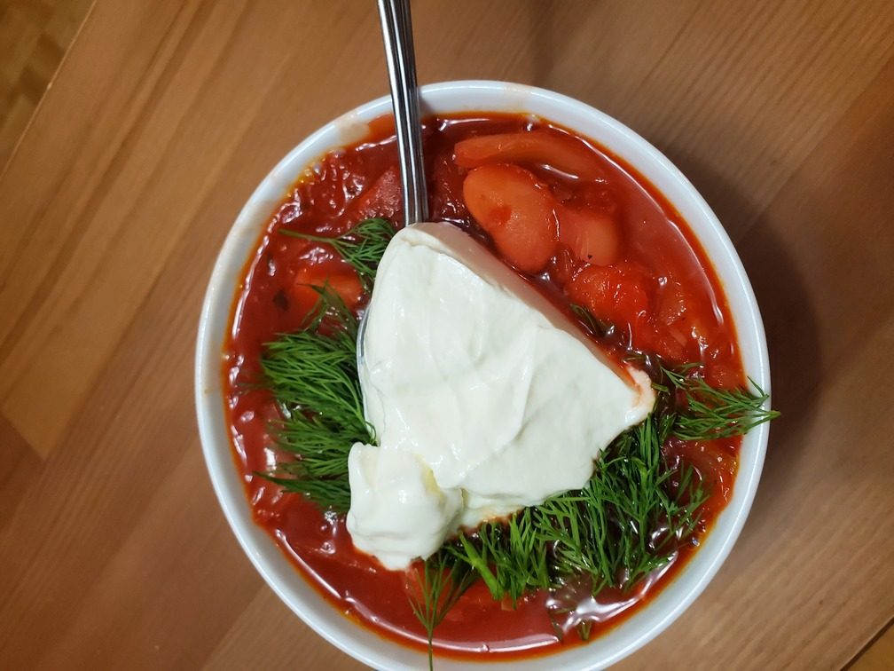
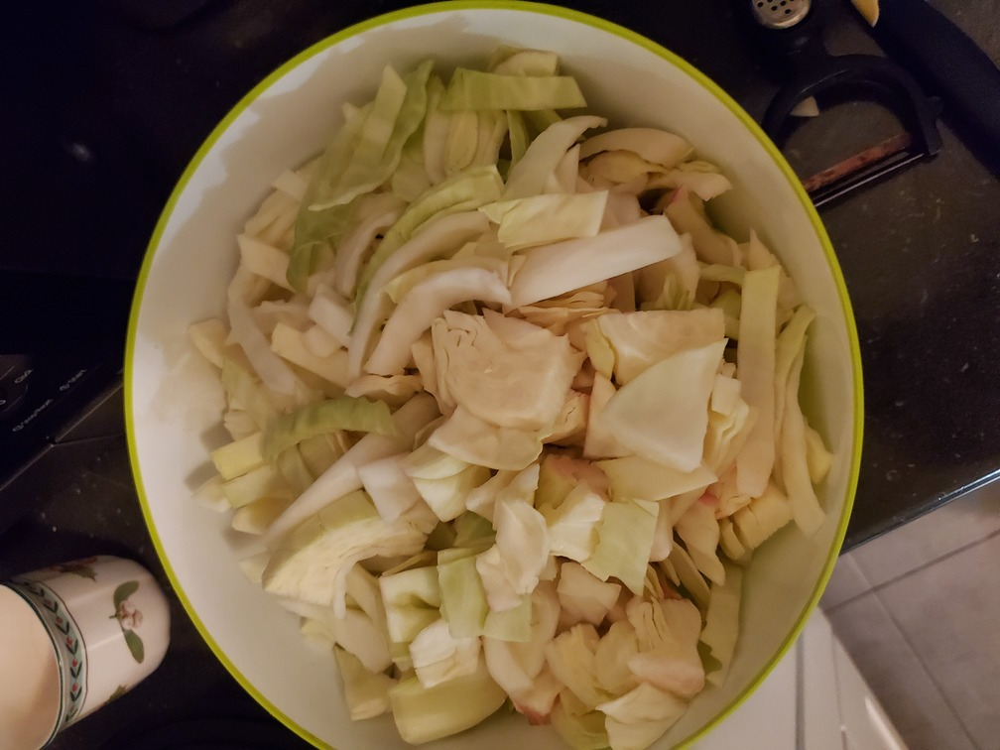
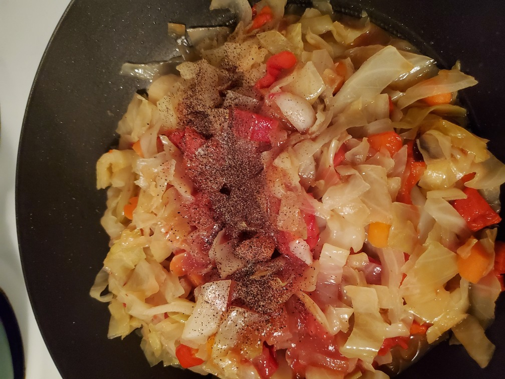

Vegetarian Borscht
Put kidney beans in water overnight so they soak in the water and become bigger.


Place the kidney beans into the bottom of a large pot and cover them with water. Bring beans to a boil.

When beans boil, a layer of foam forms on the surface of the water. This will not affect your beans' flavor or quality in any way, so you can just ignore it. However, I prefer to remove it with a regular spoon.

Wash and peel beets. Your hands and everything peeled beet touches will be painted red. 🙂

Put beets in the boiling water and let them boil for about 45-60 minutes. Boiling time depends mostly on the beet's size.

While beets are boiling, it's a good time to slice cabbage.
You will need a big deep pan for making a cabbage stew. This time I'm using coconut oil for my stew, but you can also use olive oil or any other oil you prefer. Traditionally Ukrainians use sunflower oil.


Cover the pan with a lid and let it simmer for 10-15 min.
While cabbage is simmering it's time to slice carrots and sweet pepper.

Don't forget to stir cabbage occasionally. At least once every 5 minutes.
Put carrots and peppers on top of the cabbage, stir again, cover with the lid and simmer for another 10-15 min.
Now it's a good time to check if beets are ready. They should be tender so a fork should come in easily. Take them out and let them cool down.
Don't forget to stir your veggies so they are evenly cooked. Here you have some space for experiments. This time I keep it simple and add some black pepper and a cup of tomato juice. Along with/instead of black pepper you can use your favorite spices and/or seasoning. Instead of tomato juice, you can use tomato paste or pasta sauce.
Let your veggies simmer for another 15-20 minutes and use this time to peel and cut potatoes.

Put potatoes in boiling water and let's add a bit of green color to our borscht. This time I've decided to add some arugula and kale blend, but you can also use spinach or a spring mix. Chop and add it to your boiling pot.
Beets should cool down by this time. Grate beets and add them to your pot.
By this time your veggies should be ready, so add them to your pot as well.
If you see that your borscht is too thick, add some tomato juice or boiled water to achieve a desired level of thickness.
Congratulations! Your borscht is ready for consumption! I prefer to serve it with fresh dill and sour cream but it must be tasty by itself. 🙂